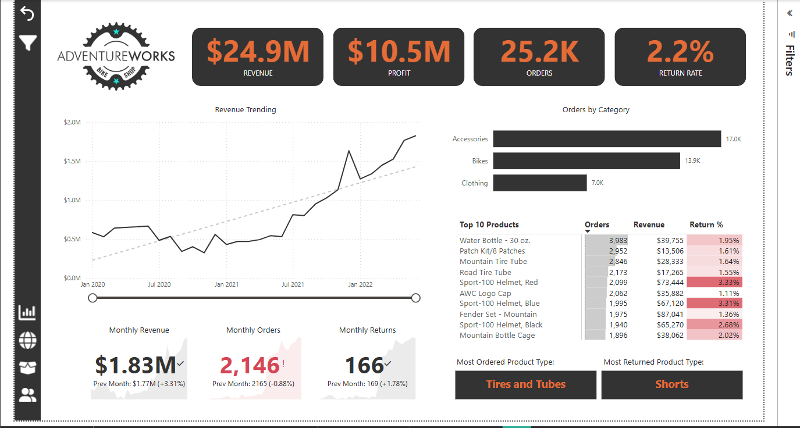
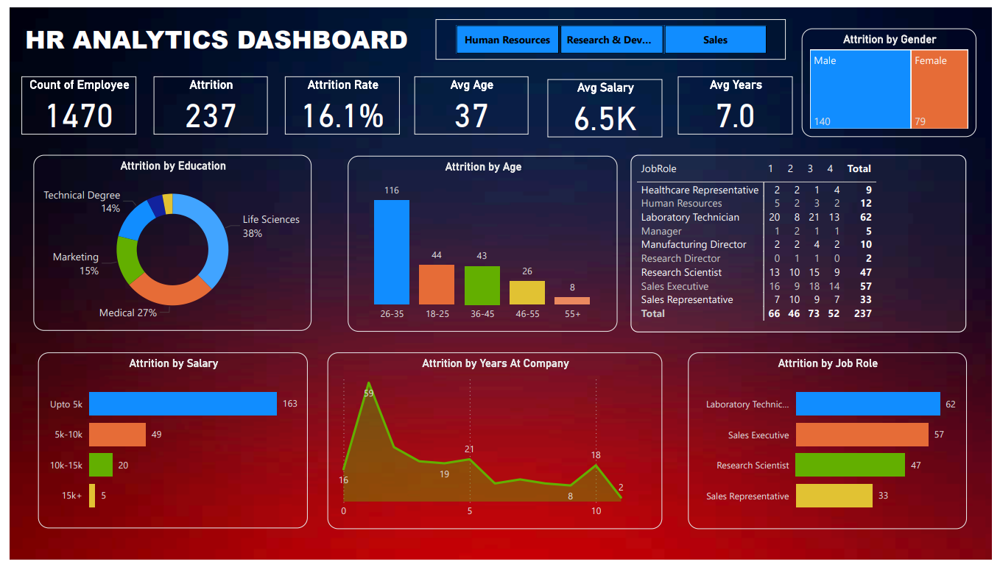
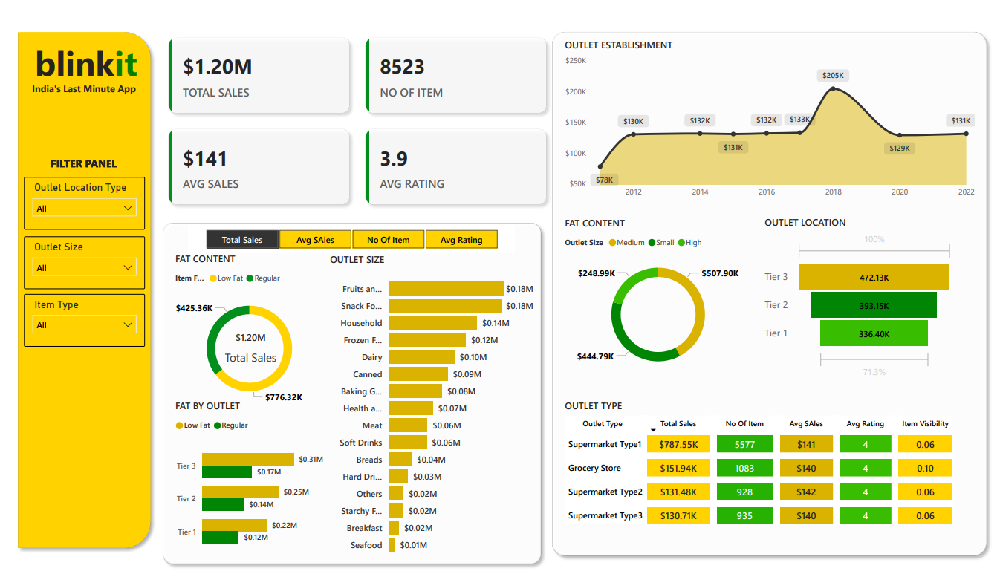
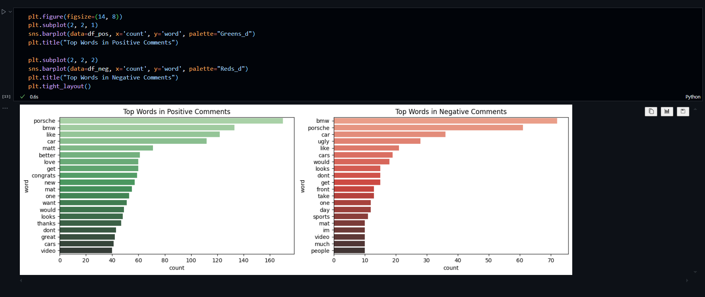
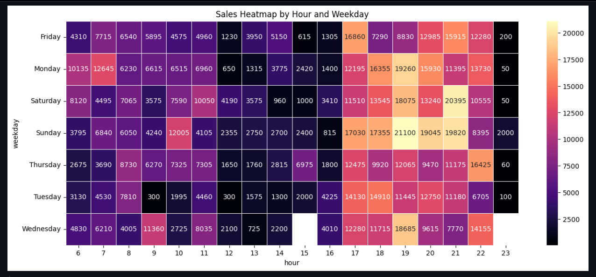

Analyzed historical sales and product data to identify key sales trends and product performance across different regions and time periods.
Built a dynamic dashboard using Power BI to visualize KPIs such as total sales, product category-wise performance, and regional contribution


Created an HR dashboard using Power BI to monitor employee attrition, leading to a simulated 15% improvement in retention strategy planning.
Analyze attrition by different factors.

In this project I Created an interactive dashboard to analyze various metrics such as sales performance, product trends, customer preferences and top-selling products,
regional sales trends, and sales KPIs using Power BI.

This project is about social media sentiment analysis. I analyzed youtube video comments whether they're positive or negative. I used Python and its libraries for data cleaning, data preprocessing, and sentiment analyzing.

This project provides insights into key business metrics, including sales revenue, total cost, net profit and total orders. The dashboard helps analyze revenue distribution across different countries, product categories and payment methods while also tracking order status and sales trends over time.